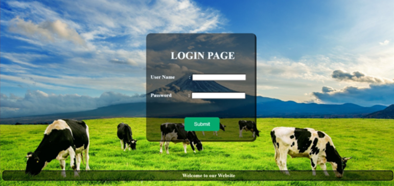
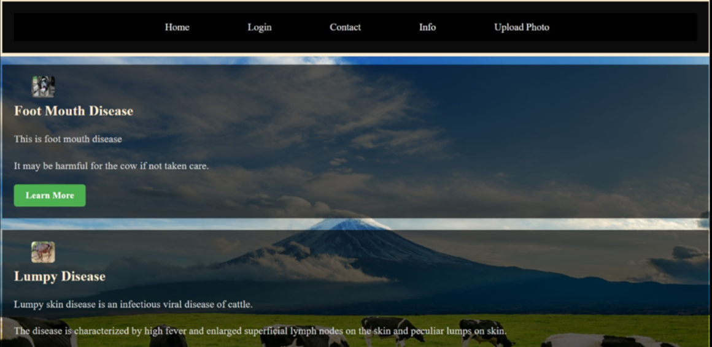

This project detects the Foot & Mouth Disease in cow, for which we have trained using 3 models : VGG-16, Resnet, Inception. We also have the Frontend from where the user can send image as an input, then using the trained models, we predict if the cow has disease or not. For integrating ML models with the Frontend, we use Flask API.
Frontend :


You can view the detailed project report here